The Sowinski Walk
A bare concrete slab at the foot of the steps, and a pile of flag sitting in the driveway. Drag the frame below to pull the slab back over the finished walk.
- Scope
- Walk, steps & walls
- Surface
- Irregular flagstone
- Edge
- Granite cobble
- Set
- Full mortar bed

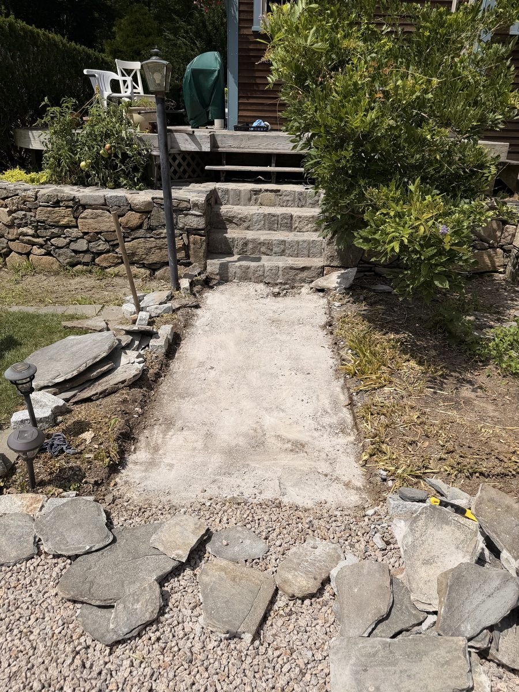
BEFORE AFTER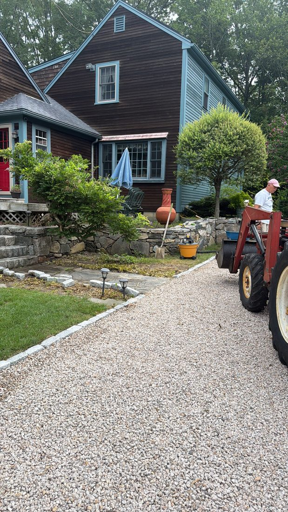
It all lands in the driveway
Flag, cobble, loam and mortar arrive in one place and get moved from there. Staging it once, where it's actually needed, is the difference between a job that runs and a job that drags.
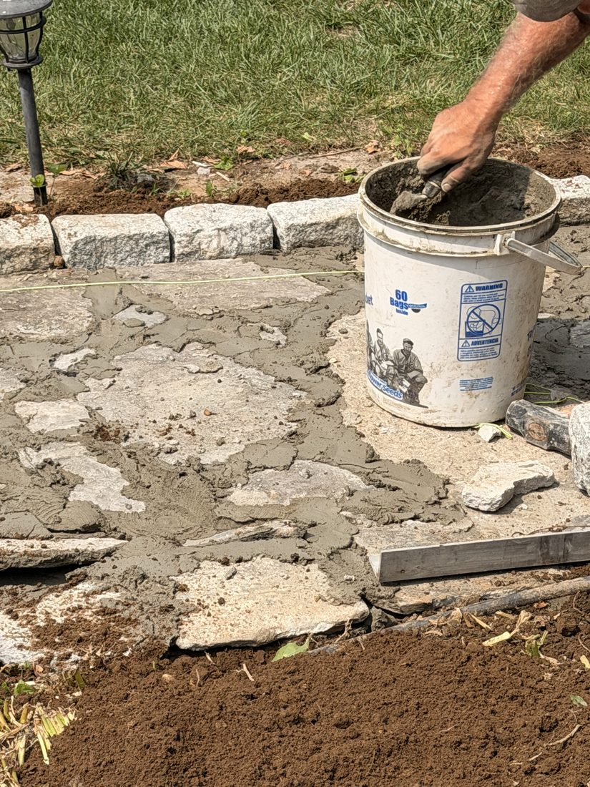
Full mortar, on concrete
Every stone goes down in a full bed on a poured base. Nothing is floated on sand and hoped over — a walk that gets used every day of the year has to be set like one.

The string goes down first
Pulled before the first piece lands, and every stone after it checked against it. Height, pitch and run all come off that string. Get it wrong here and no amount of good stonework hides it.
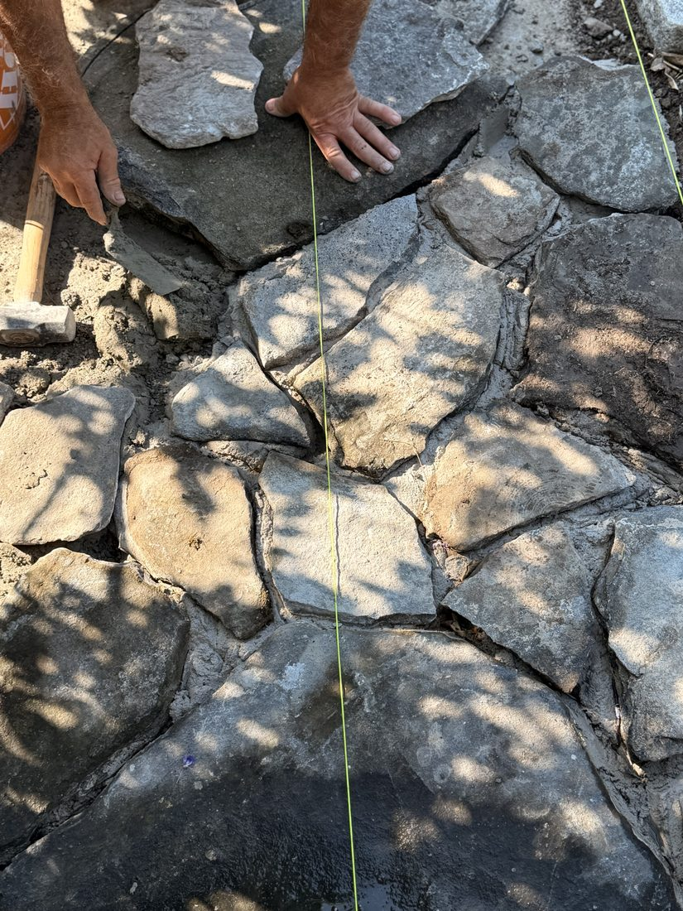
No pattern to fall back on
Irregular flag has no repeat. Each stone is picked and shaped to meet the ones already down, so the joints stay tight instead of turning into a field of mortar with rocks in it.
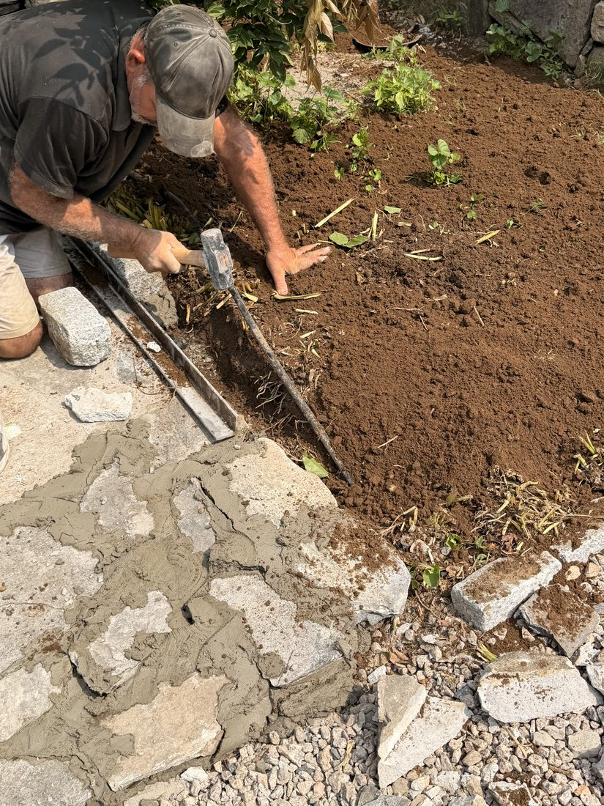
Cobble both sides, cut by hand
Granite cobble set down each side, then the bed cut back to it. That edge is what keeps the loam out of the walk and the walk out of the lawn — for good, not for a season.
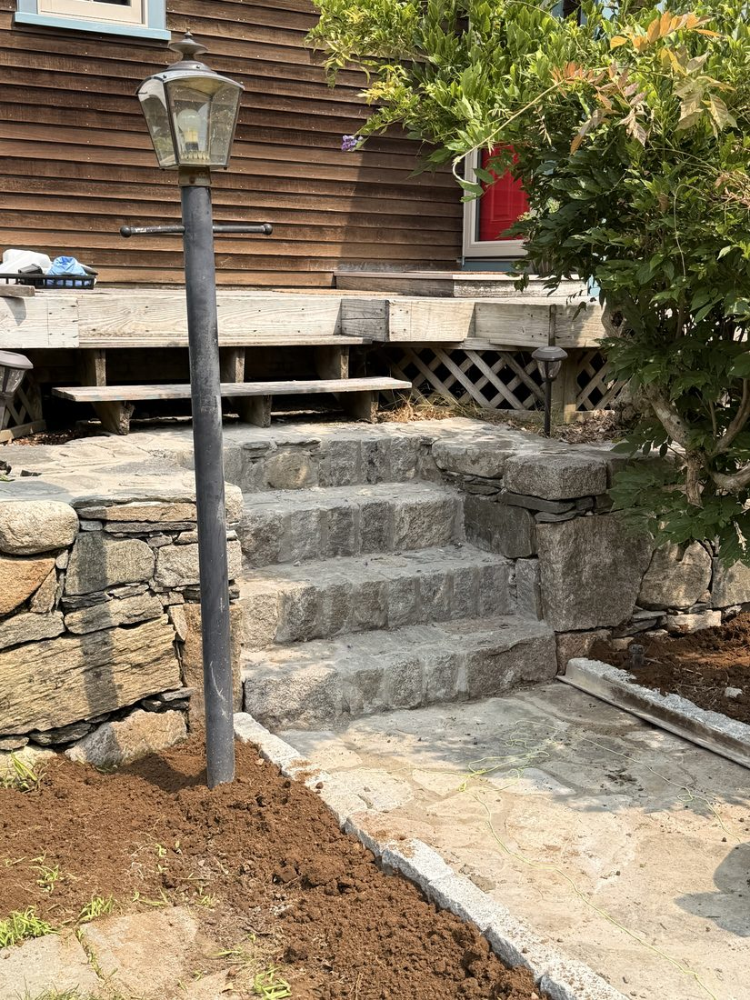
Solid granite, four risers
Full blocks up to the deck, carried on the wall either side of them. Every riser the same height, so nobody arriving at this house ever has to think about their feet.
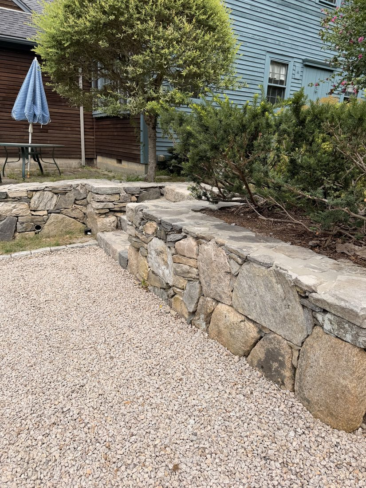
Along the drive. No mortar anywhere in it. It stands because each stone was chosen to lock the ones underneath, and it will still be standing when the mortared ones have let go.
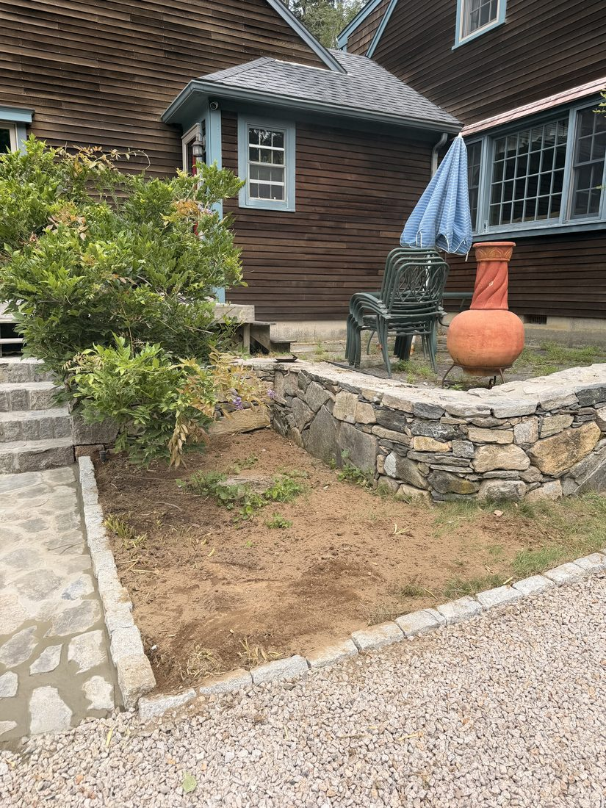
Around the terrace. Capped to shed water rather than hold it, then the ground brought back up to meet it so the wall reads as part of the yard instead of an object in it.
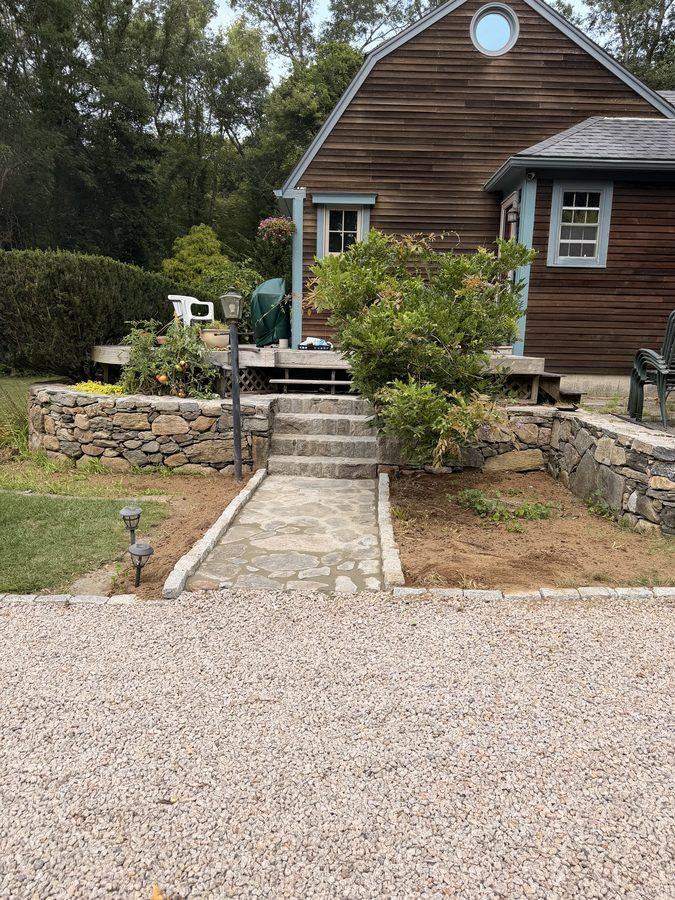
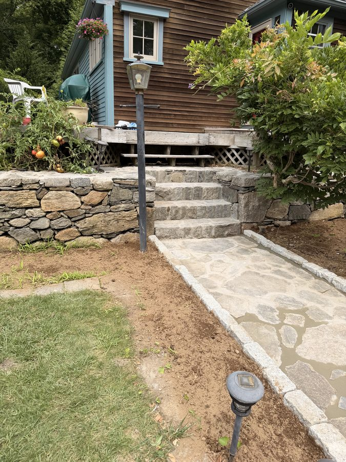
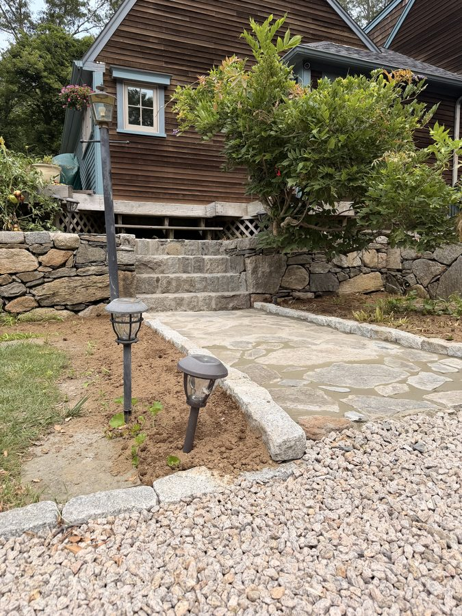
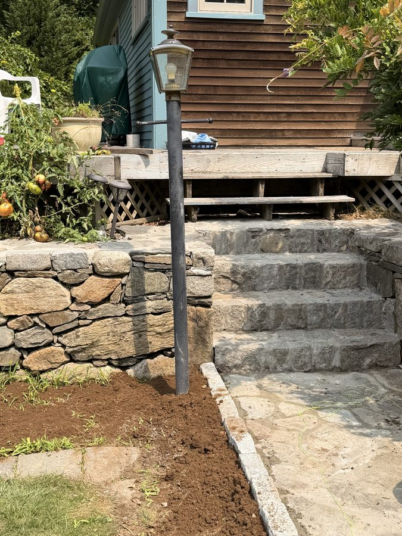
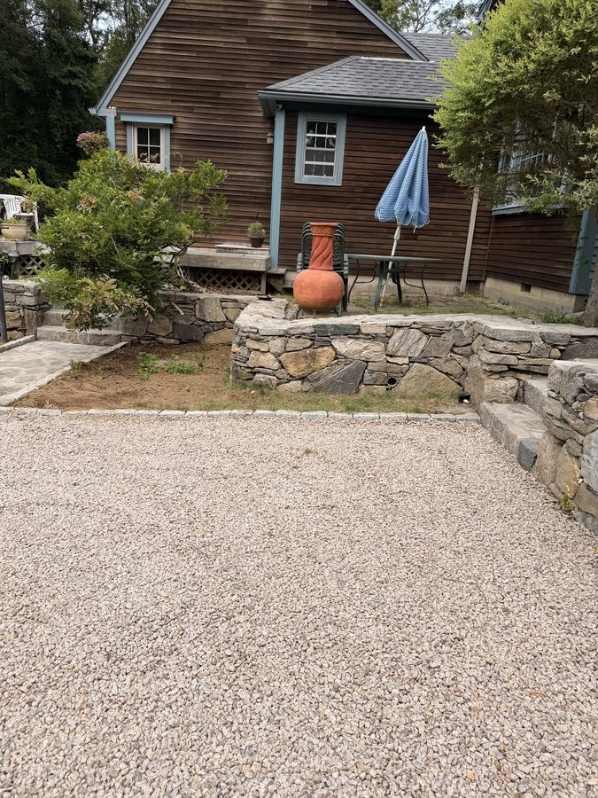
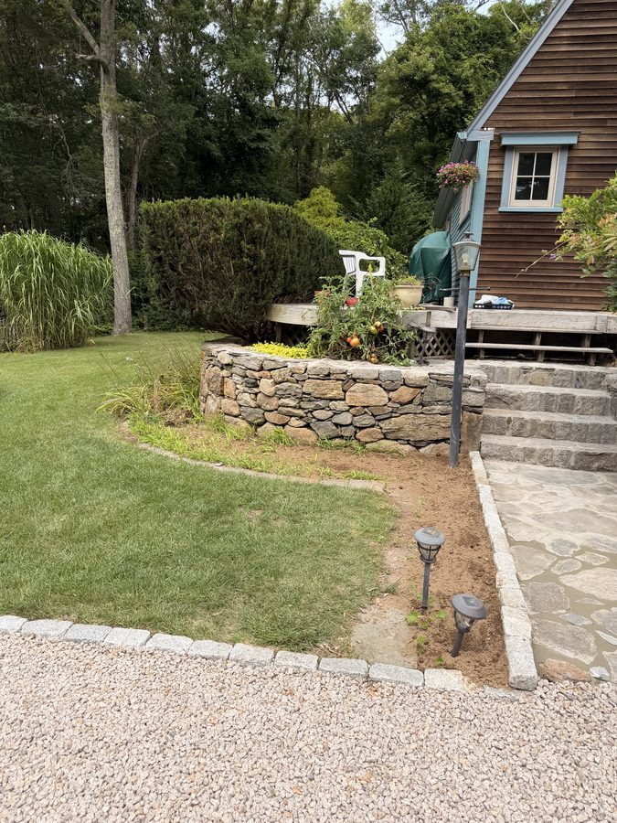
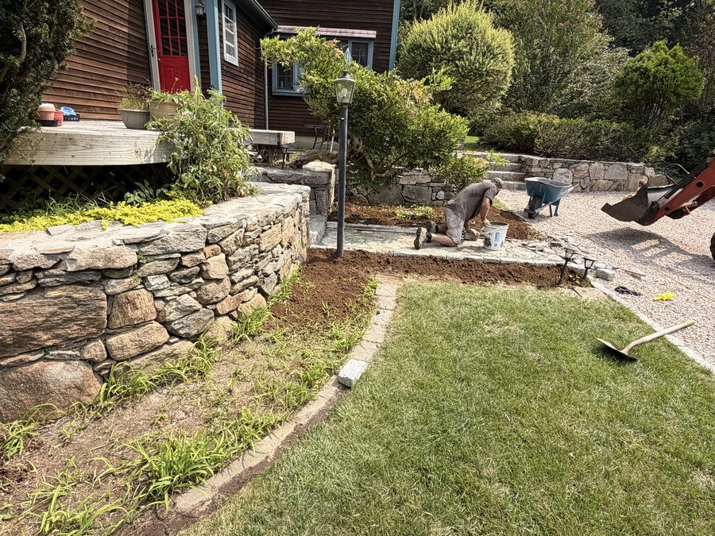
A walk is judged by the fifth winter, not the first week.
Get a free quoteLicensed & insured Massachusetts crews · our own people, not subcontracted out